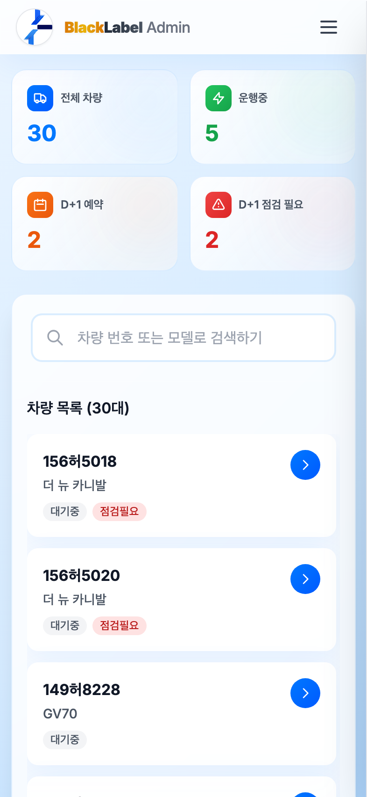
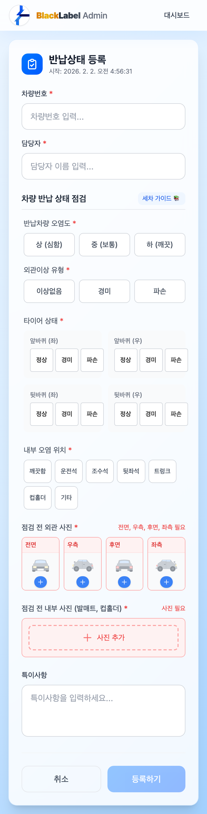
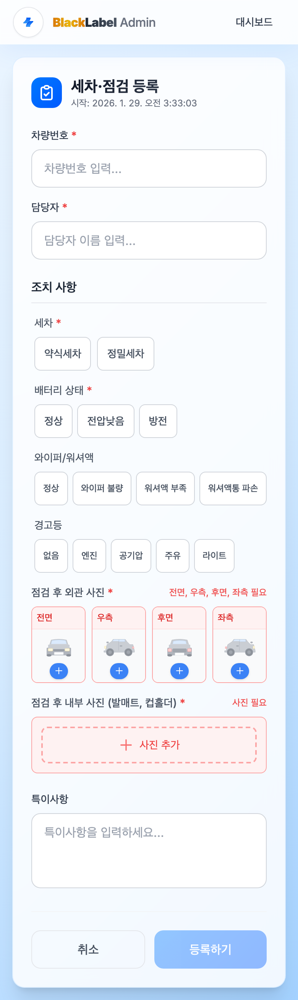
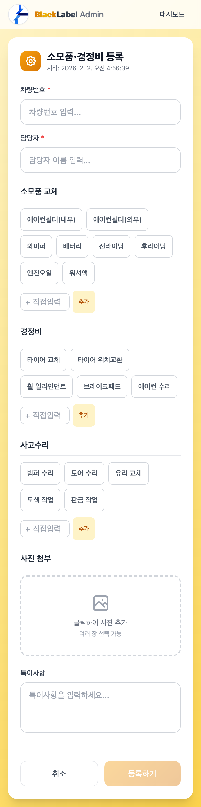

BlackLabel Admin
모바일 사용 가이드
blacklabel.vercel.app
버전 2.0 | 2026년 2월
1. 시작하기
BlackLabel Admin은 차량 점검 상태를 기록하고 관리하는 모바일 웹 서비스입니다.
접속 방법
스마트폰 브라우저에서 blacklabel.vercel.app에 접속합니다.
홈 화면에 추가하기 (앱처럼 사용)
1
iPhone (Safari)
- Safari로 접속
- 하단 공유 버튼 (□↑) 터치
- "홈 화면에 추가" 선택
- "추가" 터치
2
Android (Chrome)
- Chrome으로 접속
- 우측 상단 메뉴 (⋮) 터치
- "홈 화면에 추가" 선택
- "추가" 터치
TIP: 홈 화면에 추가하면 앱처럼 전체 화면으로 사용할 수 있습니다.
2. 대시보드 화면
앱을 실행하면 가장 먼저 보이는 메인 화면입니다.

대시보드 메인 화면
화면 구성 설명
1
상단 통계 카드
- 전체 차량 - 등록된 총 차량 수
- 운행중 - 현재 고객이 이용 중인 차량
- D+1 예약 - 24시간 내 예약 시작 예정
- D+1 점검 필요 - 점검이 필요한 차량
2
검색창
차량번호 또는 모델명으로 검색할 수 있습니다.
3
차량 목록
차량번호, 모델명, 최근 점검일, 상태 배지가 표시됩니다.
차량을 터치하면 상세 페이지로 이동합니다.
4
햄버거 메뉴 (≡)
오른쪽 상단 메뉴를 터치하면 주요 기능으로 바로 이동할 수 있습니다.
- 대시보드
- 반납상태 등록
- 세차·점검 등록
- 소모품·경정비 등록
TIP: 통계 카드를 터치하면 해당 상태의 차량만 필터링됩니다. 예를 들어 "점검필요"를 터치하면 점검이 필요한 차량만 표시됩니다.
3. 반납상태 등록하기
고객이 차량을 반납했을 때 차량 상태를 기록합니다.

반납상태 등록 화면
입력 순서
1
차량번호 입력
차량번호 4자리 이상 입력하면 자동으로 검색 결과가 표시됩니다.
검색된 차량을 터치하여 선택합니다.
2
담당자 선택
본인 이름을 선택합니다.
목록에 없으면 이름을 입력하고 "추가" 버튼을 터치합니다.
3
반납차량 오염도
| 선택값 |
설명 |
| 상 (심함) |
오염이 심한 상태 |
| 중 (보통) |
보통 수준의 오염 |
| 하 (깨끗) |
깨끗한 상태 |
4
외관이상 유형
| 선택값 |
설명 |
| 이상없음 |
외관 손상 없음 |
| 경미 |
운행 가능한 작은 손상 |
| 파손 |
운행 불가능한 심각한 손상 |
5
타이어 상태
4개 타이어(앞좌/앞우/뒤좌/뒤우) 각각의 상태를 선택합니다.
- 정상 - 이상 없음
- 경미 - 약간의 마모/손상
- 파손 - 교체 필요
6
내부 오염 위치 (복수 선택 가능)
오염된 부위를 모두 선택합니다.
- 깨끗함, 운전석, 조수석, 뒷좌석, 트렁크, 컵홀더, 기타
7
점검 전 외관 사진 (필수)
전면 / 우측 / 후면 / 좌측 - 4방향 모두 촬영 필수
8
점검 전 내부 사진 (필수)
발매트, 컵홀더 등 내부 상태를 촬영합니다.
9
특이사항 (선택)
추가로 기록할 내용이 있으면 입력합니다.
중요! 외관 사진 4장(전/우/후/좌)과 내부 사진 1장 이상을 모두 등록해야 "등록하기" 버튼이 활성화됩니다.
4. 세차·점검 등록하기
세차 완료 후 점검 결과를 기록합니다.

세차·점검 등록 화면
입력 순서
1
차량번호 / 담당자
반납상태 등록과 동일하게 입력합니다.
2
세차 (필수)
| 선택값 |
설명 |
| 약식세차 |
기본 세차 |
| 정밀세차 |
꼼꼼한 세차 |
3
배터리 상태 (필수)
| 선택값 |
설명 |
| 시동정상 |
정상 시동 |
| 시동불량 |
시동 걸리지 않음 |
5
경고등 (복수 선택)
- 없음
- 엔진
- 공기압
- 주유
- 라이트
- 기타(주관식) - 선택 시 내용 입력
6
점검 후 외관 사진 (필수)
세차 완료 후 전면 / 우측 / 후면 / 좌측 - 4방향 모두 촬영 필수
7
점검 후 내부 사진 (필수)
세차 완료 후 발매트, 컵홀더 등 내부 상태를 촬영합니다.
TIP: 세차·점검 기록이 있어야 대시보드의 "점검필요" 상태가 해제됩니다.
5. 소모품·경정비 등록하기
소모품 교환, 경정비, 사고수리 내역을 기록합니다.

소모품·경정비 등록 화면
입력 순서
1
차량번호 / 담당자
다른 점검 등록과 동일하게 입력합니다.
2
소모품 교체 (복수 선택 가능)
교체한 소모품을 선택합니다.
- 에어컨필터(내부), 에어컨필터(외부), 와이퍼, 배터리
- 전라이닝, 후라이닝, 엔진오일, 워셔액
- 목록에 없는 항목은 직접 입력하여 추가 가능
3
경정비 (복수 선택 가능)
수행한 경정비 작업을 선택합니다.
- 타이어 교체, 타이어 위치교환, 휠 얼라인먼트
- 브레이크패드, 에어컨 수리
- 목록에 없는 항목은 직접 입력하여 추가 가능
4
사고수리 (복수 선택 가능)
사고로 인한 수리 작업을 선택합니다.
- 범퍼 수리, 도어 수리, 유리 교체
- 도색 작업, 판금 작업
- 목록에 없는 항목은 직접 입력하여 추가 가능
5
사진 첨부
교체한 부품, 영수증, 정비 완료 상태 등을 촬영합니다.
6
특이사항 (선택)
상세 내용이 필요한 경우 여기에 입력합니다.
- 예: "엔진오일 5W-30 교환, 오일필터 동시 교체"
- 예: "앞 타이어 2개 교체 (한국타이어 245/45R18)"
TIP: 3가지 카테고리(소모품/경정비/사고수리) 중 최소 1개 이상 선택해야 등록이 가능합니다.
6. 사진 촬영 가이드
사진은 점검 기록의 중요한 증거 자료입니다. 아래 가이드를 참고하여 촬영해주세요.
외부 사진 촬영 방법
1
전면 사진
- 차량 정면에서 2~3m 거리
- 번호판이 선명하게 보이도록
- 차량 전체가 프레임 안에 들어오도록
2
후면 사진
- 차량 뒤쪽에서 2~3m 거리
- 후면 번호판이 보이도록
- 트렁크, 후미등 상태 확인 가능하도록
3
좌측/우측 사진
- 차량 측면에서 2~3m 거리
- 차량 전체가 보이도록
- 도어, 휀더, 휠 상태 확인 가능하도록
내부 사진 촬영 방법
1
발매트
- 운전석/조수석 발매트 상태
- 오염, 이물질 여부가 보이도록
주의!
- 사진이 흐리거나 흔들리면 안 됩니다
- 각 부위가 잘 보일 수 있도록 촬영해주세요
- 손상 부위가 있다면 클로즈업 사진도 추가해주세요
7. 자주 묻는 질문
Q: "등록하기" 버튼이 눌리지 않아요
A: 다음 항목을 확인해주세요:
- 차량번호가 선택되었는지
- 담당자가 선택되었는지
- 필수 항목(*)이 모두 입력되었는지
- 외관 사진 4장이 모두 등록되었는지
- 내부 사진이 1장 이상 등록되었는지
Q: 담당자 이름이 목록에 없어요
A: 검색창에 이름을 직접 입력하고 "OOO 추가" 버튼을 터치하면 새로운 담당자가 추가됩니다.
Q: 사진이 업로드되지 않아요
A: 네트워크 연결을 확인해주세요. Wi-Fi 또는 LTE 연결 상태가 좋은 곳에서 다시 시도해주세요. 사진 한 장당 10MB를 초과하면 업로드되지 않습니다.
Q: 차량을 검색해도 안 나와요
A: 차량번호 4자리 이상을 정확히 입력해주세요. 숫자와 한글이 정확해야 검색됩니다.
Q: "문열기" 버튼은 어디 있나요?
A: 점검 등록 화면에서 차량을 선택하면 오른쪽 하단에 초록색 "문열기" 버튼이 나타납니다. 이 버튼을 터치하면 옥스트라로 바로 이동합니다.
BlackLabel Admin v2.0 | 2026년 2월
문의: 관리자에게 연락